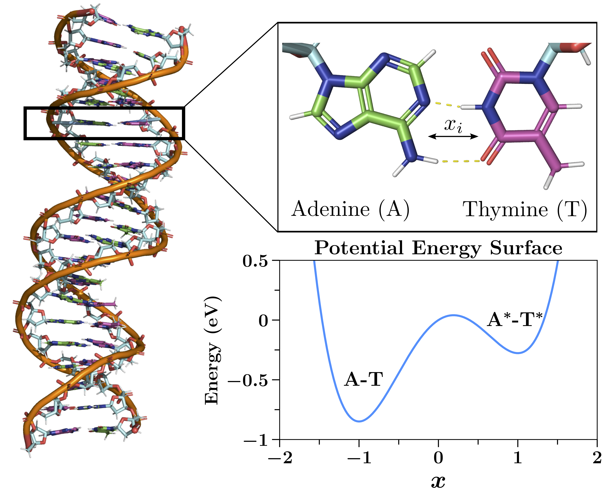
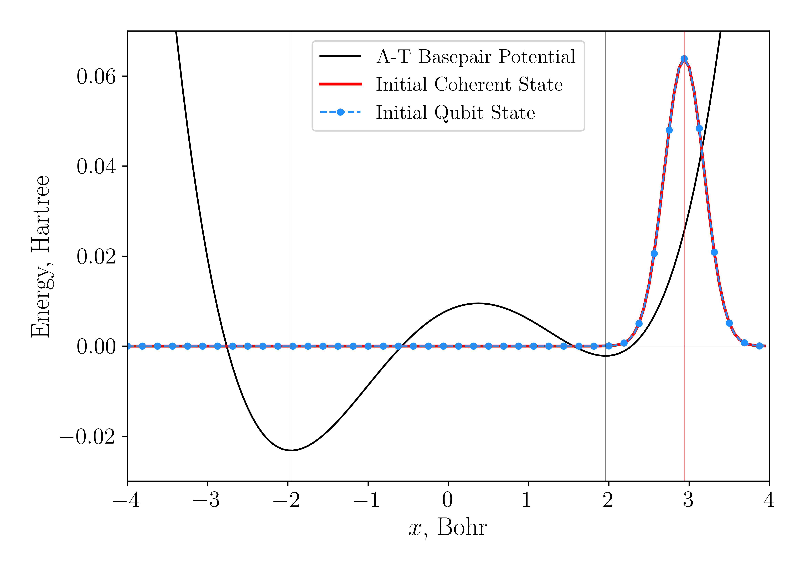
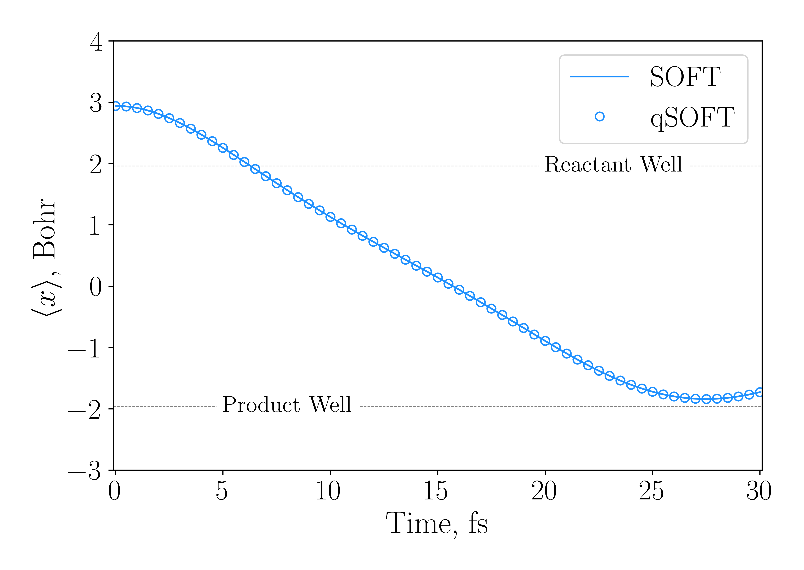

Simulation of Proton Transfer Dynamics in Adenine-Thymine Base Pair
In this section, we will compute the dynamics for the proton transfer in an Adenine-Thymine Base Pair as it would be implemented on a qubit-based quantum computer. We will model the Adenine-Thymine base pair following this paper. A cartoon schematic of our model is shown here:

Setting Up The Simulation
We have included the Adenine-Thymine base pair potential as a default quartic potential in qflux. It can be implemented with the following code:
from qflux.closed_systems.utils import get_proton_mass
from qflux.closed_systems import DynamicsCS
x0 = 1.9592 # x_0 scaling factor
omega = 0.00436 # frequency corresponding to right well from V''(x)
proton_mass = get_proton_mass() # Proton mass in a.u.
# Instantiate our class with 128 grid points, initial displacement, mass of proton, and frequency
dw_dyn_obj = DynamicsCS(n_basis=128, xo=1.5*x0, mass=proton_mass, omega=omega)
# Define our coordinate grid range
dw_dyn_obj.set_coordinate_operators(x_min=-4.0, x_max=4.0)
# Initialize operators
dw_dyn_obj.initialize_operators()
# Construct initial state
dw_dyn_obj.set_initial_state(wfn_omega=omega)
# Define the propagation time
total_time = convert_fs_to_au(30.0)
N_steps = 3000
dw_dyn_obj.set_propagation_time(total_time, N_steps)
# Set our hamiltonian as a quartic potential
dw_dyn_obj.set_hamiltonian(potential_type='quartic')
# Propagate
dw_dyn_obj.propagate_qSOFT()
dw_dyn_obj.propagate_SOFT()
dw_dyn_obj.propagate_qt()
We can check the initial state by plotting on the potential:
import matplotlib.pyplot as plt
fig, ax = plt.subplots()
ax.plot(dw_dyn_obj.x_grid, dw_dyn_obj._PE_grid + 0.008 , '-', color='black', label='A-T Basepair Potential')
ax.plot(dw_dyn_obj.x_grid, np.real(0.04*dw_dyn_obj.psio_grid.conj()*dw_dyn_obj.psio_grid), '--', color='red', label='Initial Coherent State')
ax.plot(dw_dyn_obj.x_grid, np.real(0.04*dw_dyn_obj.dynamics_results_qSOFT[0].conj()*
dw_dyn_obj.dynamics_results_qSOFT[0])/dw_dyn_obj.dx,
'--o', markevery=3, color='dodgerblue', label='Initial Qubit State')
ax.axhline(0, lw=0.5, color='black', alpha=1.0)
ax.axvline(-dw_dyn_obj.x0, lw=0.5, color='black', alpha=0.5)
ax.axvline(dw_dyn_obj.x0, lw=0.5, color='black', alpha=0.5)
ax.axvline(dw_dyn_obj.x0*1.5, lw=0.5, color='red', alpha=0.5)
ax.set_xlabel('x, Bohr',fontsize=18)
ax.set_ylabel('Energy, Hartree',fontsize=18)We i
ax.tick_params(labelsize=16, grid_alpha=0.5)
plt.ylim(-0.03,0.07)
plt.legend(fontsize=14,loc='upper center')
Which should produce a plot like this:

And we can also visualize with the final propagated state:
from scipy.interpolate import interp1d
import numpy as np
x_1024 = np.linspace(dw_dyn_obj.x_grid[0], dw_dyn_obj.x_grid[-1], 1024)
f_interp = interp1d(dw_dyn_obj.x_grid, dw_dyn_obj.dynamics_results_grid[-1], kind='cubic')
fq_interp = interp1d(dw_dyn_obj.x_grid, dw_dyn_obj.dynamics_results_qSOFT[-1], kind='cubic')
rho_interp = f_interp(x_1024)
rho_q_interp = fq_interp(x_1024)
fig, ax = plt.subplots()
ax.plot(dw_dyn_obj.x_grid, dw_dyn_obj._PE_grid + 0.008,
'-',color='black',label='A-T Basepair Potential', lw=3)
ax.plot(dw_dyn_obj.x_grid, 0.04*np.real(dw_dyn_obj.psio_grid.conj()*dw_dyn_obj.psio_grid),
'-',color='crimson',label='Initial Coherent State', lw=1.8)
ax.plot(dw_dyn_obj.x_grid, np.real(0.04*dw_dyn_obj.dynamics_results_qSOFT[0].conj()*
dw_dyn_obj.dynamics_results_qSOFT[0])/dw_dyn_obj.dx,
'o', markevery=3, color='crimson', label='Initial Qubit State')
ax.plot(x_1024, 0.04*np.real(rho_interp.conj()*rho_interp),'-',color='dodgerblue',
label=f'State at t = {convert_au_to_fs(total_time)} fs', lw=1.8)
ax.plot(x_1024, 0.04*np.real(rho_q_interp.conj()*rho_q_interp)/dw_dyn_obj.dx,'o',color='dodgerblue',
label=f'Qubit State at t = {convert_au_to_fs(total_time)} fs', lw=0, markevery=3)
ax.axhline(0, lw=0.5, color='black', alpha=1.0)
ax.set_xlabel('$x$, Bohr',fontsize=18)
ax.set_ylabel('Energy, Hartree',fontsize=18)
ax.tick_params(labelsize=16, grid_alpha=0.5)
plt.ylim(-0.03,0.07)
plt.xlim(-4, 4)
plt.legend(fontsize=14,loc='upper center')

And we can also look at the expectation value of the position as a function of time:
from qflux.closed_systems.utils import calculate_expectation_values, convert_au_to_fs
avxgrid = calculate_expectation_values(dw_dyn_obj.dynamics_results_grid, dw_dyn_obj.x_grid)
qb_x = calculate_expectation_values(dw_dyn_obj.dynamics_results_qSOFT, dw_dyn_obj.x_grid, dx=1)
fig, ax = plt.subplots()
ax.plot(dw_dyn_obj.tlist*convert_au_to_fs(1.), avxgrid, '-', color='dodgerblue',label=r'SOFT')
ax.plot(dw_dyn_obj.tlist*convert_au_to_fs(1.), qb_x, 'o', markevery=50,
color='dodgerblue',label=r'qSOFT', lw=0, fillstyle='none', ms=6)
ax.axhline(-x0, ls='--', lw=0.5, color='black', alpha=0.5)
ax.axhline( x0, ls='--', lw=0.5, color='black', alpha=0.5)
plt.text(20, x0-0.1, 'Reactant Well', fontsize = 16, backgroundcolor='white')
plt.text(5, -x0-0.1, 'Product Well', fontsize = 16, backgroundcolor='white')
ax.set_xlabel(r'Time, fs')
ax.set_ylabel(r'$\left\langle x \right\rangle$, Bohr')
ax.tick_params(grid_alpha=0.5)
plt.ylim(-3,4)
plt.xlim(-.10, 30.1)
plt.legend(loc='upper right')

We can see that we have good agreement between the expectation values computed from the qubit dynamics and the classical grid-based dynamics.
Lastly, we can visualize the evolution over time and see that the dynamics are nearly identical:
Note: We can visualize the quantum circuit behind the evolution for a single time-step:
And get a nice simplified diagram for the quantum circuit:

But, in order to get an actual idea for how complex the circuit is, we should first call the .decompose() method, which will break things up into fundamental gates. The resulting circuit is massive (I'll let you see for yourself!):
You can increase the number of reps repetitions that the circuit will be decomposed to further decompose the circuit. Here, we're just going to highlight that the number of non-local gates (those involving at least 2 qubits) is greater than 3000 - far more than we can reasonably run on current NISQ devices.